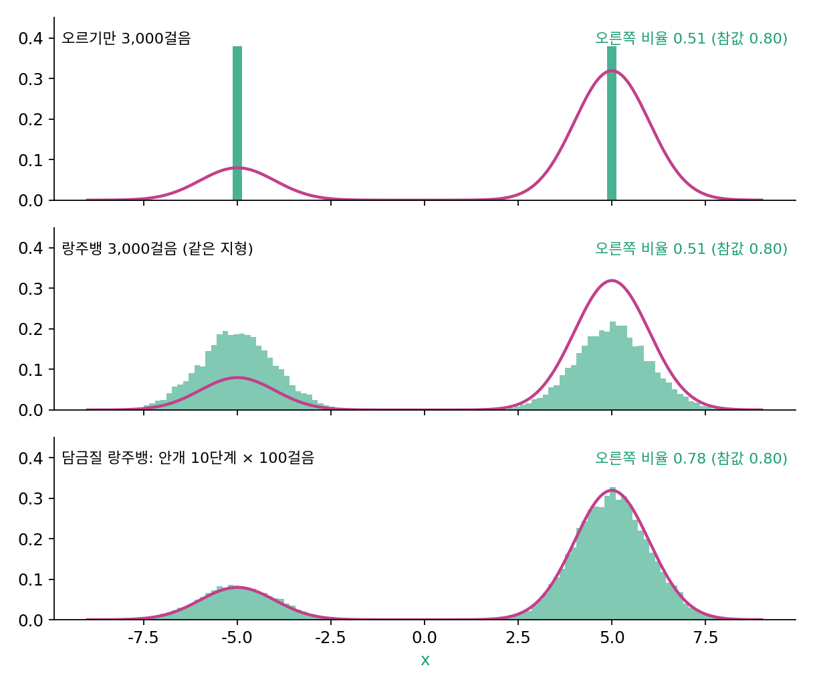

담금질 랑주뱅: 안개를 걷으며 걷기
봉우리가 −1.5와 +1.5에 있어 골짜기가 얕을 때는, 점들이 이쪽저쪽을 오가며 봉우리 비중을 맞췄다. 그림의 분포는 그렇게 너그럽지 않다. 고양이 그림과 자동차 그림 사이에는 어느 쪽으로도 그럴듯하지 않은 그림들이 넓게 깔려 있다. 봉우리가 멀리 떨어지면 랑주뱅 샘플링은 어떻게 될까?
역사: 스코어만으로 그림을 뽑으려다 만난 두 벽
송(Yang Song)과 에르몬(Stefano Ermon)은 2019년 논문 「데이터 분포의 기울기를 어림해 만드는 생성 모델」에서 스코어만 배워 랑주뱅 샘플링으로 그림을 뽑는 길을 시도했다. 그들은 두 벽을 적었다. 첫째는 데이터가 높은 차원 공간의 얇은 면 근처에만 모여 있다는 점이었다. 데이터가 없는 넓은 곳에서는 스코어를 배울 근거가 거의 없어서, 2차원 장난감에서도 배운 스코어는 봉우리 바로 둘레에서만 믿을 만했다. 둘째는 랑주뱅 샘플링이 「섞이는 데 느리다」는 것이었다. 비중이 1/5과 4/5인 두 가우시안을 멀리 떨어뜨린 혼합에서 정확한 스코어로 랑주뱅 샘플링을 돌려도 두 봉우리의 비율이 맞지 않았다.
두 사람이 찾은 길은 둘을 한꺼번에 푸는 것이었다. 데이터에 여러 크기의 잡음을 섞어 잡음 크기마다 스코어를 배운다. 잡음을 크게 섞으면 데이터가 넓게 퍼져 빈 곳이 줄고, 봉우리 사이 골짜기도 메워진다. 그림을 뽑을 때는 가장 짙은 잡음의 분포에서 랑주뱅 걸음을 몇 번 걷고, 잡음을 한 단계 줄인 분포에서 다시 몇 번 걷는 일을 되풀이한다. 그림 실험에서는 잡음의 표준편차를 1에서 0.01까지 등비로 줄어드는 열 단계로 두고 단계마다 100걸음을 걸었으며, 걸음 크기는 그 단계 잡음 분산에 비례하게 잡았다. 논문은 이 방법이 금속을 천천히 식히는 담금질 기법(시뮬레이티드 어닐링)과 담금질 중요도 표집에서 착안했다고 적었다.
멀리 떨어진 두 봉우리
봉우리를 −5(비중 0.2)와 +5(비중 0.8)로 떼어 놓자(폭 1). 앞과 같이 −8과 8 사이에 고르게 뿌린 점 2만 개를 걸음 크기 0.05로 걷게 하면, 오르기만 하면 오른쪽 비율이 0.511이고, 랑주뱅 샘플링으로 3,000걸음을 걸어도 0.514다. 걸음을 열 배인 3만 걸음으로 늘려도 0.518이다. 봉우리 안의 모양(표준편차 1.005)은 맞는데 비율은 처음 뿌린 그대로다. 골짜기 한가운데의 −log p는 왼쪽 꼭대기보다 10.89, 오른쪽 꼭대기보다 12.28 높다. 골짜기에 설 확률이 꼭대기의 수만분의 일이라, 걷는 점이 그 사이를 건너는 일은 거의 일어나지 않는다. 처음에 어느 쪽에 떨어졌는지가 끝까지 남는다.
이제 안개를 끼운다. 지형에 잡음 크기 σ(시그마)를 섞으면 봉우리마다 분산이 1 + σ²로 넓어진다. σ를 10에서 0.1까지 등비로 줄이는 열 단계를 두고, 단계마다 그 지형의 바늘로 랑주뱅 걸음을 100번 걷는다. 걸음 크기는 0.05 × (1 + σ²)로, 봉우리가 넓어진 만큼 크게 걷는다.
모두 1,000걸음 걸은 뒤 오른쪽 비율은 0.779로 참값 0.8에 다가가고, 봉우리 안 표준편차도 1.008로 맞는다. 짙은 안개 속에서는 두 봉우리가 큰 언덕 하나로 합쳐져 있어서 점들이 그 언덕의 모양대로, 곧 비중대로 먼저 나뉘고, 그다음에 안개가 걷히며 각 봉우리로 내려앉는다. 이렇게 잡음을 섞은 지형에서 시작해 잡음을 단계마다 줄여 가며 그 단계의 바늘로 랑주뱅 걸음을 걷는 방법을 담금질 랑주뱅 (안개를 걷어 가며 걷는 랑주뱅 / annealed Langevin dynamics)이라 한다. 「담금질」은 영어 annealing(달군 금속을 천천히 식히기)을 옮긴 말이라, 뜨거운 쇠를 물에 넣어 급히 식히는 대장간의 담금질과는 뜻이 반대다.

ML에서: 잡음 수준마다의 바늘을 쓰는 첫 샘플러
담금질 랑주뱅에는 잡음 수준마다의 바늘이 필요하다. 잡음을 섞어 본 기록으로 바늘을 배우는 방법이 바로 그것을 준다. 송과 에르몬의 신경망은 그림과 잡음 크기 σ를 함께 받아 그 수준의 스코어를 내놓았고, 그림 한 장을 뽑을 때 열 단계 × 100걸음, 곧 신경망을 1,000번 불렀다. 같은 잡음 크기에서 100걸음씩 머무는 것은 그 단계의 분포에 점들이 자리 잡을 때까지 기다리는 일이다. 잡음 수준이 계속 줄어드는데 매번 한자리에서 기다려야 할까? 그 물음이 다음 걸음법을 부른다.
문제 4. 비중을 모르는 바늘
데이터는 −5와 +5에 봉우리를 둔 두 가우시안의 혼합(폭 1)이다. 비중이 0.2와 0.8일 때와 반반일 때, 두 분포의 스코어를 견준다. (가) x = 4와 x = −4에서 두 스코어는 각각 얼마인가? (나) x = 0에서는? (다) 안개 σ = 3을 섞은 두 분포(봉우리 분산 10)의 스코어를 x = 0과 4에서 견주면?

비중이 다르면 바늘도 다르겠죠. 0.8짜리 봉우리 쪽이 더 세게 끌 테니까요.

x = 4에서 계산해 봐요.

0.2/0.8일 때 1.000000, 반반일 때도 1.000000이에요. 소수 여섯째 자리까지 같아요. x = −4에서도 둘 다 −1.000000이고요.

+5 봉우리 바로 옆에서는 −5 봉우리 몫이 e^(−40)쯤이라 사실상 0이야. 그러면 log(π₂p₂) = log π₂ + log p₂인데, log π₂는 상수라 미분하면 사라져. 바늘에는 봉우리 하나의 기울기만 남아.

그럼 비중은 바늘 어디에 들어 있어요?

(나)를 보면 x = 0에서 0.2/0.8은 3.0, 반반은 0이에요. 두 봉우리 몫이 비슷한 골짜기에서만 비중이 바늘을 기울여요. 그런데 걷는 점은 거의 그 골짜기에 가지 않으니, 비중을 알려 주는 바늘을 읽을 일이 없어요.
(다)는 안개를 끼우면 x = 0에서 0.3과 0이고, x = 4에서도 0.0954와 0.0820으로 달라요. 안개 속에서는 봉우리가 넓어져서 점들이 서는 곳 어디서나 바늘이 비중을 느끼는구나.

짙은 안개에서 비중대로 먼저 나뉘고, 그다음에 걷히는 거니까 비율이 맞는 거야. 안개가 정보를 감추는 게 아니라 오히려 먼 곳의 정보를 가까이 실어 오네.

지도 앱에서 확대한 채로는 옆 동네가 얼마나 큰지 모르다가, 축소해 보면 어느 동네가 큰지 보이는 거랑 같네요.
문제 5. 단계마다 몇 걸음
문제 4의 0.2/0.8 지형에서, 안개를 10에서 0.1까지 열 단계로 걷되 단계마다 걷는 걸음 수를 줄여 본다(점 2만 개, 걸음 크기 0.05 × (1 + σ²)). 본문의 100걸음일 때 오른쪽 비율은 0.779였다. (가) 단계마다 10걸음, 3걸음, 1걸음이면 오른쪽 비율과 오른쪽 봉우리 안 표준편차는 어떻게 되는가? (나) 모두 걷는 걸음 수를 100이나 300으로 정해 둔다면, 단계 수와 단계마다 걸음 수를 어떻게 나누는 편이 나은가? (풀어 본 뒤 위젯 1의 「문제 5 불러오기」로 확인해 보자.)
담금질만 하면 비율이 맞으니까, 걸음 수는 줄여도 비슷하지 않을까요? 단계마다 1걸음이면 신경망을 열 번만 부르면 되잖아요.
돌려 봐요.

10걸음이면 0.650, 3걸음이면 0.580, 1걸음이면 0.541이에요. 표준편차도 1.037, 1.753, 2.478로 커져요. 1걸음이면 비율도 모양도 다 틀려요.
각 단계에서 점들이 그 단계의 분포에 자리 잡기 전에 안개가 걷혀 버린 거야. 짙은 안개에서 퍼져 있던 모양이 그대로 남아서 표준편차가 큰 거고.
(나)는요? 모두 100걸음이면 10단계 × 10걸음과 100단계 × 1걸음이 있어요.

100단계 × 1걸음이 0.658로 10단계 × 10걸음의 0.650보다 조금 나아요. 300걸음이면 30단계 × 10걸음이 0.746이고요.
같은 걸음 수라면 한 단계에서 오래 머무르는 것보다 안개를 잘게 나눠 조금씩 걷는 쪽이 낫구나. 단계 사이 분포 차이가 작으면 점들이 따라가기 쉬우니까. 그러면 단계를 끝없이 잘게 나누고 단계마다 한 걸음씩만 걸으면 어떻게 될까?

좋은 물음이에요. 안개를 연속으로 걷으면서 걸음마다 한 번씩만 바늘을 읽는 길, 그 길에서 잡음을 얼마나 넣어야 하는지가 다음 이야기예요.
시험 전날 밤새는 것보다 매일 조금씩 공부하는 게 낫다는 말이 숫자로 나왔네요.